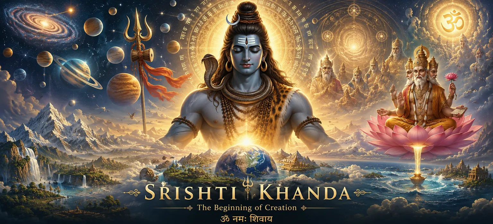

Srishti Khanda is the first division of Rudra Samhita in the Shiva Purana. It reveals the sacred mystery of creation, the emergence of the universe from the Supreme Reality, and the divine manifestation of Lord Shiva. Through profound narratives and spiritual teachings, this Khanda explains how existence began and how all beings are connected to the eternal truth.
The Sanskrit word “Srishti” means creation. In the Shiva Purana, creation is not merely the formation of the physical world but the manifestation of divine consciousness into countless forms. Srishti Khanda teaches that the universe is sacred because it originates from the Supreme Lord and ultimately returns to Him.
This Khanda describes the events surrounding the origin of creation, the appearance of Brahma and Vishnu, the revelation of Lord Shiva's supreme nature, and the establishment of cosmic order. It also contains sacred teachings on devotion, divine wisdom, righteousness, and the relationship between the Creator and creation.
The revelation of Lord Shiva as the eternal and supreme reality.
The divine process through which the universe comes into existence.
The importance of faith, worship, and surrender to Lord Shiva.
Spiritual teachings that guide seekers toward truth and liberation.
Read Srishti Khanda chapter by chapter. Each chapter reveals the divine mystery of creation, the eternal glory of Lord Shiva, and the beginning of the cosmic order.
Explore the sacred chapters of Srishti Khanda in sequence. Each chapter unveils the origins of creation, the boundless greatness of Lord Shiva.
Begin your spiritual journey through the sacred chapters of Srishti Khanda. Discover the divine story of creation, the eternal glory of Lord Shiva, and the sacred wisdom preserved within each chapter.
Srishti Khanda is suitable for devotees, spiritual seekers, students of Hindu philosophy, and anyone interested in understanding the origin of creation through the teachings of the Shiva Purana. The sacred narratives help readers develop faith, wisdom, humility and devotion.
"From the silence before creation arose the eternal presence of Lord Shiva. In Him begins every universe, and in Him every soul finds its true origin."
The sacred wisdom of Srishti Khanda unfolds chapter by chapter. Begin with the divine story of creation and continue discovering the eternal glory of Lord Shiva through every sacred chapter.